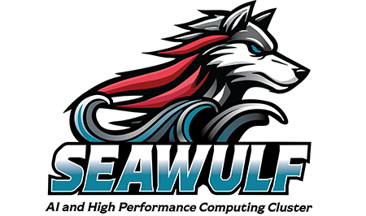

Getting started
How to Install
Build a tagged GUNDAM release with its submodules and connect it to your local ROOT environment.
Requirements
Before you build
| Dependency | Requirement | Notes |
|---|---|---|
| CMake | 3.12 or newer | Used to configure and generate the build. |
| C++ compiler | C++14 minimum; C++17 preferred | GCC 8+ or Clang 9+ is recommended. |
| ROOT | ROOT 6 | Build ROOT with C++14 or a later standard compatible with GUNDAM. |
| JSON | JSON for Modern C++ | Provided through the project dependency setup. |
| YAML | yaml-cpp | Used for configuration input. |
| Git | Modern Git recommended | Required for cloning and updating submodules. |
Standard Build
Set up, compile, and install GUNDAM
Use the standard CMake workflow below for a tagged GUNDAM release. The commands keep the source, build products, and installed files in separate directories so each can be managed independently.
1. Define the working directories
Choose where repositories, build products, and installed software will live. Add these exports to ~/.bashrc on Linux or ~/.bash_profile on macOS if you want them to be available in future shells.
# Adjust these paths to suit your system.
export REPO_DIR="$HOME/Repositories"
export BUILD_DIR="$HOME/Build"
export INSTALL_DIR="$HOME/Install"
# Create the directories the first time you use this layout.
mkdir -p "$REPO_DIR" "$BUILD_DIR" "$INSTALL_DIR"2. Clone the source and select a release
Clone recursively so all required Git submodules are checked out with the main repository.
cd "$REPO_DIR"
git clone --recurse-submodules https://github.com/gundam-organization/gundam.git
cd gundam
# Recommended for analysis: select the latest tagged release
# and synchronize its submodules.
./update.sh --latestRelease choice: Tagged versions are recommended for analysis work. Developers who need the current development branch can use ./update.sh --head instead.
3. Configure and build
Make sure the intended ROOT environment is active before configuring GUNDAM. Then create a release build and install it under $INSTALL_DIR/gundam.
# If ROOT is not already configured in this shell, source its setup script.
# source /path/to/root/bin/thisroot.sh
# Configure an out-of-source release build.
cmake -S "$REPO_DIR/gundam" \
-B "$BUILD_DIR/gundam" \
-DCMAKE_BUILD_TYPE=Release \
-DCMAKE_INSTALL_PREFIX="$INSTALL_DIR/gundam"
# Compile using the available cores, then install.
cmake --build "$BUILD_DIR/gundam" --parallel
cmake --install "$BUILD_DIR/gundam"4. Add GUNDAM to the shell environment
Add the installed executables and libraries to the corresponding search paths:
export PATH="$INSTALL_DIR/gundam/bin:$PATH"
export LD_LIBRARY_PATH="$INSTALL_DIR/gundam/lib${LD_LIBRARY_PATH:+:$LD_LIBRARY_PATH}"Development helper scripts
For development across feature branches or multiple machine-specific builds, the repository also provides optional setup and build helpers:
cd "$REPO_DIR/gundam"
# ROOT must already be available before running the helper.
# source /path/to/root/bin/thisroot.sh
# Source the setup helper to define GUNDAM_ROOT, a machine-specific
# GUNDAM_TARGET, and the gundam-build command.
source ./cmake/scripts/gundam-setup.sh
# Compile and install using the helper's configured directories.
gundam-buildThe setup helper uses a compiler- and machine-specific build directory by default. Set GUNDAM_BUILD or GUNDAM_INSTALL to override those locations, GUNDAM_JOBS to control parallelism, and GUNDAM_CMAKE_DEFINES for site-specific CMake options.
Choose one build method: The development helpers wrap the same CMake build described above. They are optional and are most useful when switching frequently between branches or build configurations.
Platform Guides
Environment-specific instructions
macOS
Compiler, ROOT, and local build guidance for macOS.
Open guideHPC — University of Geneva
Environment and build guidance for the Geneva HPC facilities.
Open guidelxplus
Setup for the CERN Linux public login environment.
Open guidecc-in2p3
Setup notes for the IN2P3 computing centre in Lyon.
Open guideCEDAR
Build guidance for the Digital Research Alliance of Canada cluster.
Open guideNN group machine — SBU
Setup for the Neutrino and Nucleon Decay group machine at Stony Brook.
Open guidedunegpvm
Environment setup for the DUNE general-purpose virtual machines at Fermilab.
Open guide
SeaWulf — SBU
Build guidance for Stony Brook University's SeaWulf HPC cluster.
Open guideTroubleshooting
Common installation checks
- Confirm that
root-config --cflagsreports a C++ standard compatible with the GUNDAM build. - Run
git submodule update --init --recursiveif a dependency directory is missing. - Delete only the affected build directory—not the source tree—before retrying a clean CMake configure.
- Include the compiler, ROOT version, CMake command, and complete error output when opening an issue.